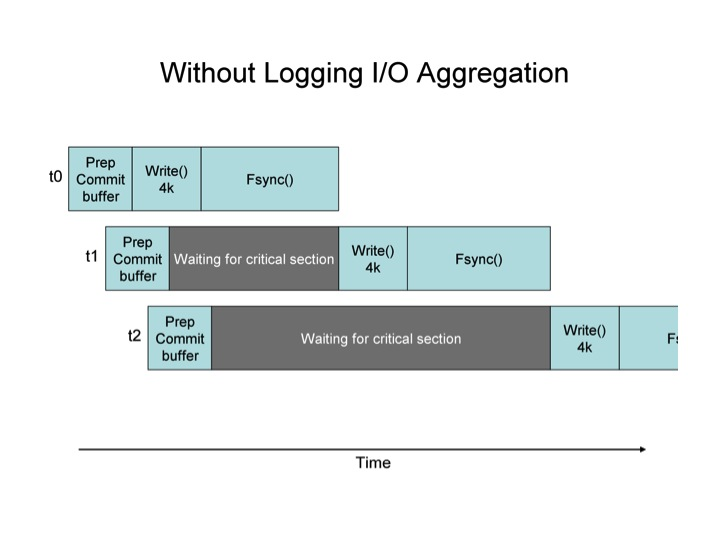
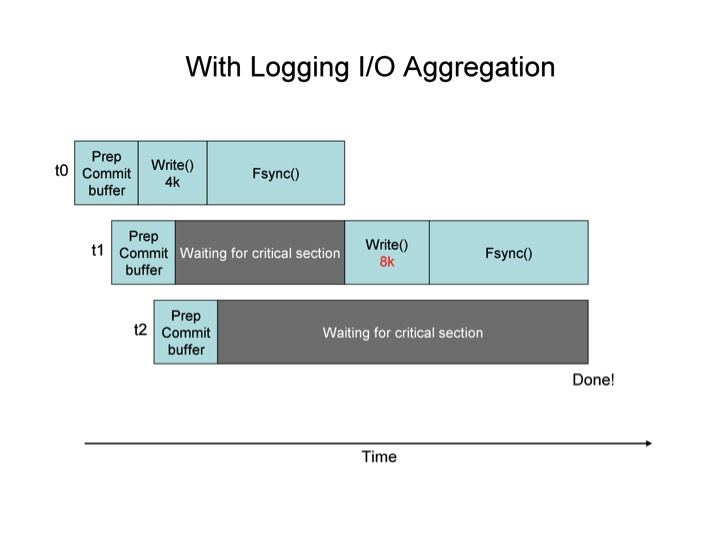

STLdb uses a write-ahead log to ensure the durability of changes. The logging directory is separate to enable it to be a dedicated (or different) filesystem. As transactions are committed, the data is written to the log as part of the commit() logic. In the case of an unexpected failure in the database (e.g. operator kills a process, or machine crashes), the log ensures that changes can be recovered from disk. (For more details on the rationale behind write-ahead logging, see TBD.)
STLdb provides three options when logging is being used:
By using diskless=true on commit calls, the application can effectively avoid ever writing anything to disk. If this is combined with never calling the checkpoint system, then no disk activity of any kind occurs – the database is purely a memory-only construct.
Because the database is held within a shared region that lasts beyond the lifetime of an individual process, it is possible to stop processes and have them restart and continue using the database, without any loss of data.
However, the moment that recovery is needed, or the moment that the shared memory region is otherwise destroyed or lost (e.g. a reboot of a machine), the application is then starting over with an empty database. Recovery processing, under this kind of configuration essentially deletes the database and recreates it, empty.
When using STLdb for high throughput memory-resident databases, you might be inclined to avoid any disk logging in favor of occasional checkpointing, with the goal being that upon failure, you can fall back to the last successfully written checkpoint.
This can work, but with restrictions. The STLdb checkpointing approach is a ‘hot checkpoint’ – one that occurs while the database is in use, and while changes are being made. Because of this, the checkpoints which are written out to disk do not represent a point in time. What can be said in regard to every checkpoint is that it contains all transactions up to one point in time T1 (the time when the checkpoint started), and none of the transactions after another point in time T2 (the time it completed), but may contain none, some, or all of the changes for any transactions which were committed during the interval from T1 to T2. The fact that such a “hot checkpoint” has this state on disk is not a problem during normal recovery, because the log files help roll the checkpoint forward until it does represent a single point in time.
Because of this quality, you can’t just disable logging and use a checkpoint instead as a way to recover back to a previous point in time. For this approach to work, the database would have to be unchanging while the checkpoint was happening. i.e. An exclusive lock would have to be held on the map while the checkpoint was occurring to prevent any change from happening while it was in progress.
Another viable option is to commit with logging (asynchronous or synchronous) while the checkpoint is running, and then deactivate logging once again after the checkpoint is done. This might be a viable option for an application which has different levels of load (e.g. lightly loaded at 3am) and can thus afford the reduction in throughput and latency that comes with activating logging. When the application then falls back, it will load the last written checkpoint, and apply all subsequently written log records in order to catch up to a moment in time (corresponding to when the checkpoint completed and logging was deactivated.) This can provide an application with the ability to run in a diskless fashion while under load, and occasionally checkpoint the database when the load is low. In the event of recovery, the application looses only those transactions which have occurred since the last checkpoint.
Asynchronous logging is a configurable option in which the application threads will perform a write() system call (or equivalent on non-posix systems) during commit() processing, but will wait for any assurance that the data has made it to the disk before completing the commit() call. The write() system call typically allows the OS to buffer the pending data within kernel buffers and does not require that the application wait on the disk I/O. However, if the OS buffers are full (backlogged with pending writes to the disk), then the write() system call may block, at least until the backlog clears.
With asynchronous logging, there is still some assurance/protection against data loss due to application crashes. Every commit() call only returns after its log records have been passed to write(). That ensures that (at a minimum) that log data is now in OS buffers. Thus, an application which crashes shortly after calling commit() will still be assured that it’s records will eventually go to disk. The only data loss with this mode of I/O occurs when the OS crashes or the machine fails before transferring the data to the physical disk.
With synchronous logging, each commit() call will not return until the application has written its log buffer contents via a write() call, and then ensured the durability of that write by issuing an fsync() system call (or equivalent). Synchronous logging throughput can benefit significantly from the use of write aggregation.
Write aggregation is a designed feature of the logging system, aimed at maximizing disk throughput, and minimizing average thread latency associated with doing synchronous disk writes.
The idea/rationale is that a sequence of larger write()/sync() pairs can achieve greater throughput than an identical sequence of smaller write()/sync() pairs. This is typically true in most OSes/devices. Because of this, the database throughput overall is sped up if all of the threads which perform commit within a small window of time aggregate their I/O together into a single large write() and sync(), rather than performing a sequential set of smaller write()/sync() pairs.
Write aggregation is achieved by having threads create their log buffers in shared memory, and then enqueue those buffers just before releasing container locks. They then enter a critical section in which they pull their buffer back out of the queue and perform the required disk writes. Rather than pull just their own buffer, however, they pull the entrie available sequence of buffers, and use a gathering write to send all of that waiting data to the disk. They can then perform a sync() to wait for the write to be flushed, and carry on. When there are a high number of threads attempting to commit() transactions simultaneously, the effect is to automatically aggregate their I/O operations into a smaller number of write() system calls that deal with a larger volume of data. Threads which enter the critical section can discover that the thread that entered the section previously has already written out their data, allowing them to complete their commit() call without any further I/O.
The two diagrams below show the effect of Log I/O aggregation graphically.


In the first diagram, the critical section is the write() & fsync() pair. The threads each enter that section one at a time. In the second diagram, the same is true, except that when a thread enters the critical section, it writes all of the log buffer data available. i.e. t1, upon entering the critical section (the right to write to the file), finds two commit buffers ready to write, it’s own, and the one belonging to t2. It writes both, achieving the benefit of aggregation. When t2 gets into the critical section, it sees that there is no longer any need for it to write anything, so it completes immediately. The average wait time in these two diagrams is smaller for the scenario where I/O aggregation is used.
A point to reiterate: I/O aggregation occurs not only among threads within one process, but also among threads in different processes, because all of the data (commit buffers) are held in shared, rather than heap, memory.
I/O aggregation is not configurable. It is automatic. This is a side effect of the impact that no having it would have on the code. I may provide a means to not use it in the future, but can’t figure out why that would be desirable.
Also note that on some OSes, while write()s are inherently serialized (because each one writes to a position which must be determined), the OS may allow parallel fsync() system calls to be issued, and may allow fsync() calls while writes() are also being done. STLdb attempts to exploit this characteristic when it is possible. It is left to the OS to enforce any synchronization needed between these primitives or allow parallization.